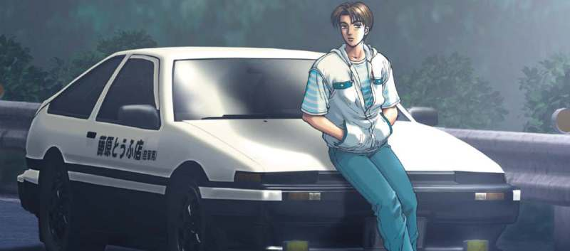

Такуми и его Хачироку
Сюжет сфокусирован на мире нелегальных японских горных уличных гонок (тоге). Основное действие происходит на горных спусках. Основные события серии происходят в японской префектуре Гумма в горах региона Канто и близлежащих городских местностях. Хотя многие названия местности изменены, все события происходят на реальных территориях Японии. В гонках большое внимание уделяется технике прохождения поворотов, теории спортивного вождения и техническим особенностям автомобилей относительно гонок. Для повышения достоверности к сюжету привлекался «король дрифта» Кэйити Цутия, который консультировал сценаристов, дал разрешение на показ некоторых эпизодов своей «Библии Дрифта» и озвучил старого друга Бунты, профессионального гонщика (фактически, самого себя, в 23 серии первого сериала).